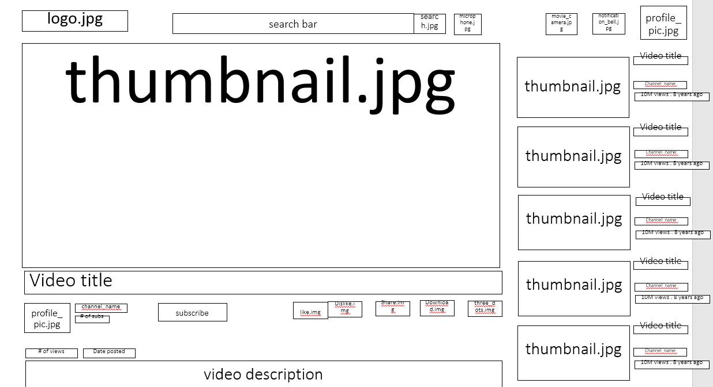
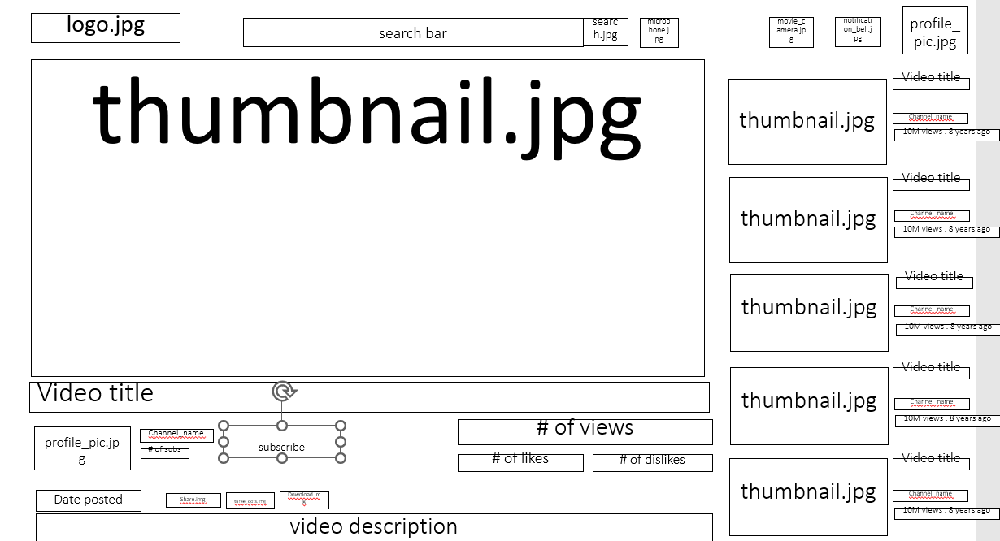

-
Using the favorite website you chose in homework 1, create a wireframe for one page of it using pen/paper, PowerPoint, or any your tool of choice. (use the 'img' tag!) Make sure to let us know what the name of your website is (Use the 'p' tag!)
I chose one webpage of the website YouTube.

-
Try to improve the website you've chosen, and create a redesigned wireframe of one page for the same website using the principles of visual hierarchy that you learned from the article.

-
What is the goal of the website? Who is it intended for? How does the design accomplish this? Write 2-3 sentences answering these questions. (Use the 'p' tag again!)
The goal of this website is to mainly provide pre-recorded, lengthy video content for entertainment and education purposes. When a user clicks on a video's elements, they are directed to a webpage that highlights certain elements more than others. For example, the video screen, subscription button, profile photo of the video's uploader, thumbnails of similar videos, and the search bar are all elements that are eye-catching in comparasion to the smaller elements on the webpage. By emphasizing these aspects, the design encourages users to develop familiarity with the uploader to the point of eventual subscription to their uploads as well as continous engagement with similar content.
-
Write 2-3 sentences about what problems your redesign addressed, and how it solved them.
In my redesign of the webpage, I made the number of views, subscription button, and post date bigger as well as introducing a big dislike number bar and big like number bar; these changes have the effect of providing the user with quick statistics about how the video was received by the public. In this way, the user can assess the video's credibility or other relevant judgements that may affect the user's decision to continue watching the video, continue subscribing to the uploader, or continue watching similar content. In this manner, the time of the user is conserved and put to more relevant use elsewhere online or offline.
NOTE: Make sure to include the wireframe images in the website and don't just put it in your assets folder!
Your wireframes should look something like this: